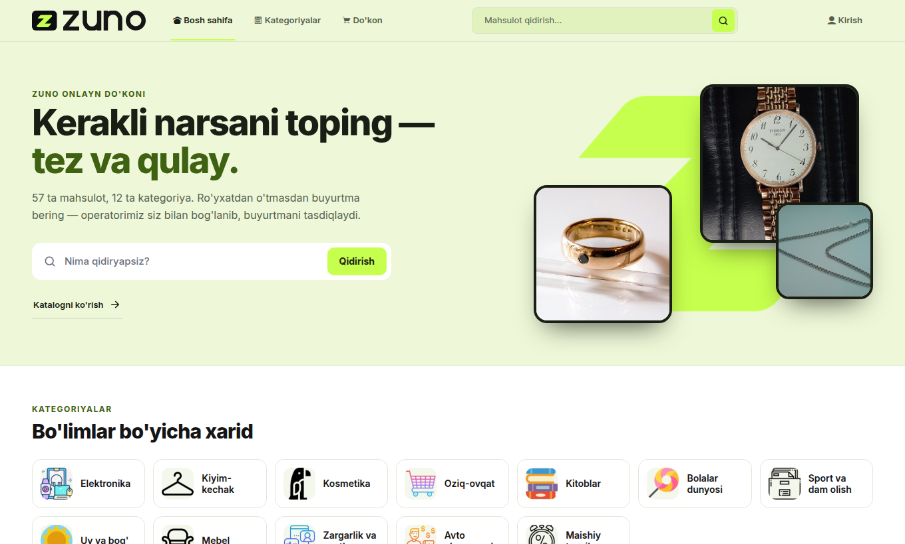
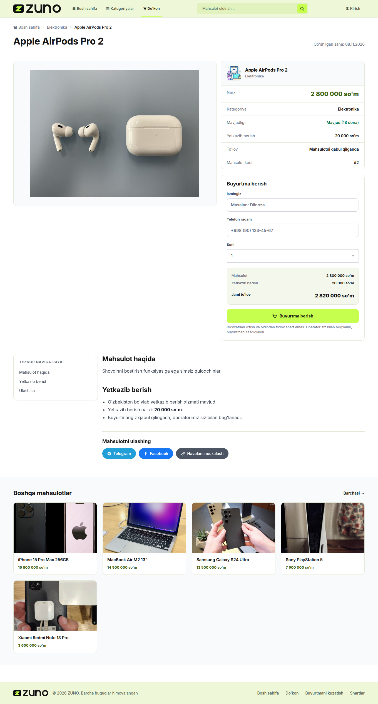
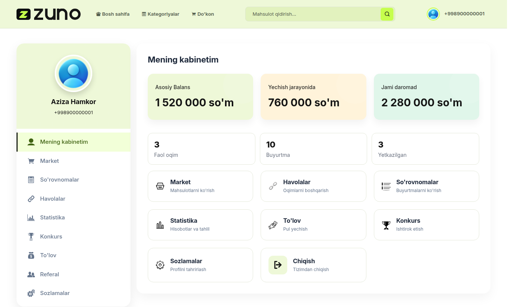
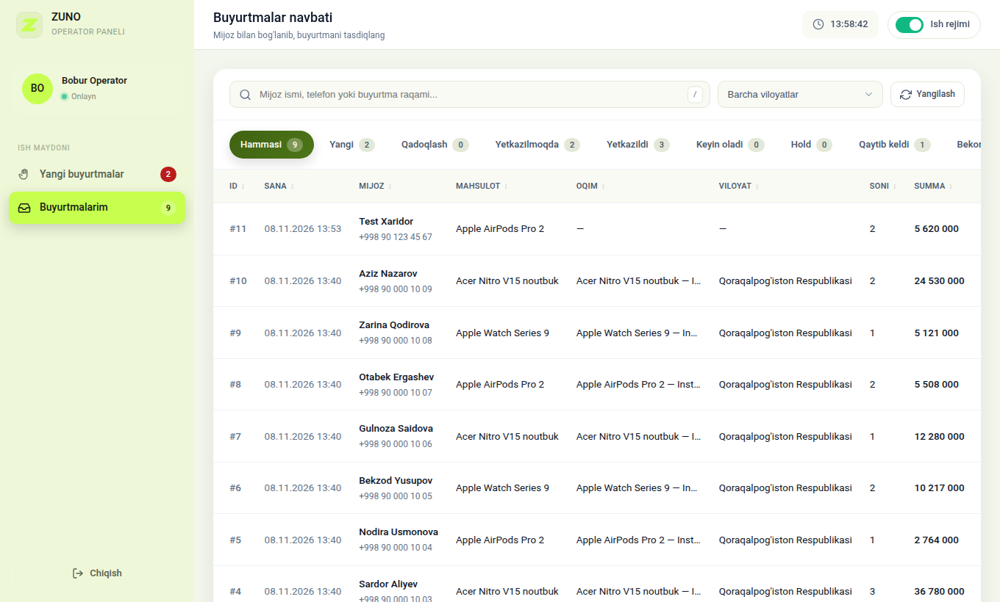
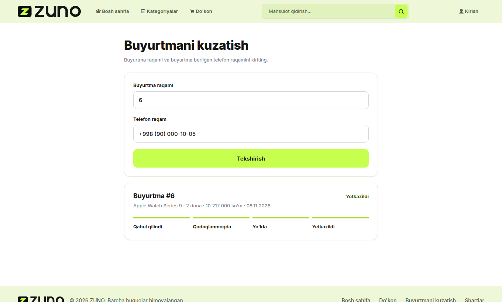

Loyiha taqdimoti
Mijoz hisob ochmasdan buyurtma beradi va mahsulotni olganda to'laydi. Operator qo'ng'iroq bilan tasdiqlaydi. Hamkor yetkazilgan har bir buyurtmadan komissiya oladi.
Manba kodiArxitektura
To'lov mahsulot qo'lga tekkanda. Yakuniy summa yetkazish bilan birga buyurtmadan oldin ko'rinadi.
Hamkor shaxsiy havola oladi, omborsiz sotadi, daromadini kabinetda ko'radi.
Operator paneli navbat, status va mijoz tarixini bitta oynada beradi.




Har bir balans o'zgarishi yoziladi. Baza cheklovi komissiyaning ikki marta tushishini to'xtatadi.
Oxirgi dona faqat bir marta sotiladi. Parallel so'rovlar test bilan tekshirilgan.
Ombor qaytishi va komissiya status o'tishlariga bog'langan. Admin ham shu yo'ldan o'tadi.